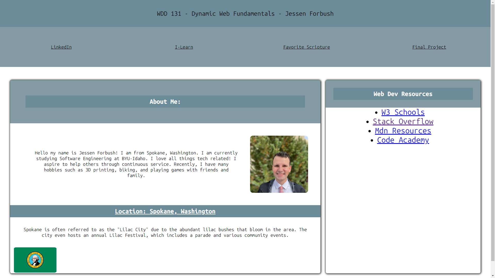
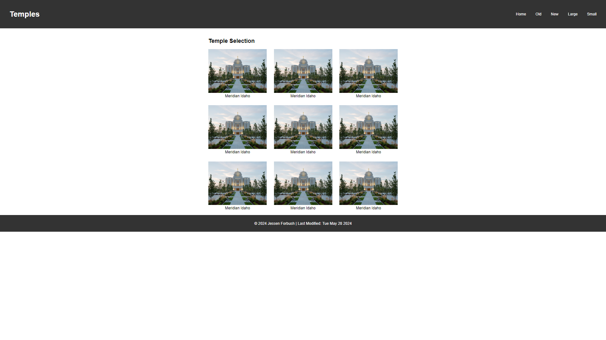
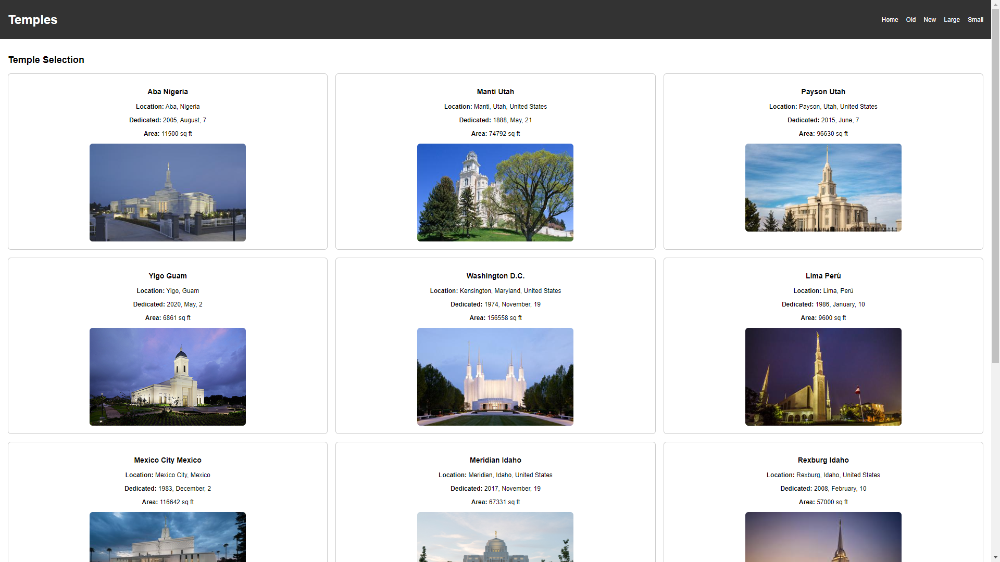

Explore My Work
Discover my projects, skills, and experience. Navigate through the links above to learn more about me and my work.
Projects
-
Homepage Assignment
This project involves creating a basic homepage using HTML and CSS to demonstrate fundamental web development skills.
-
Temples Assignment
This assignment focuses on creating a page to display information about temples, incorporating HTML, CSS, and JavaScript.
-
Filtered Temples Assignment
This project extends the temples assignment by adding filtering functionality to the temple data, using JavaScript to create an interactive user experience.
Project Images


